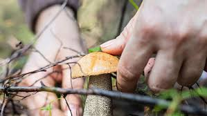
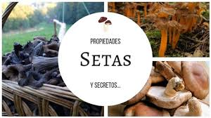
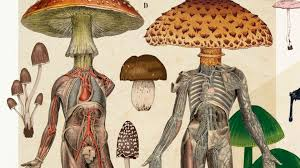
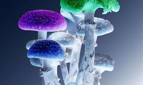
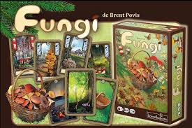
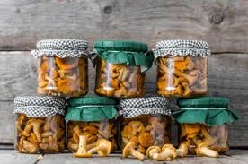

Acerca del Evento
Las Jornadas de Micología reúnen a expertos y amantes de los hongos para compartir conocimientos, explorar su importancia ecológica y disfrutar de actividades prácticas en la naturaleza. |
Información Importante
¿Dónde?
- Auditorio Municipal
- Plaza Mayor de Burgos, 09001
- Telf: 947000000
- Email: info@jornadasmicologia.org
¿Cuándo?
- Domingo, 10 de marzo, de 10:00 h a 19:00 h
- Lunes, 11 de marzo, de 9:00 h a 18:00 h
Actividades Destacadas

Taller de identificación de setas
Cocina con hongos

Senderismo micológico

Aplicaciones medicinales

Arte inspirado en hongos

Biotecnología y hongos

Juegos educativos sobre hongos

Conservación de hongos